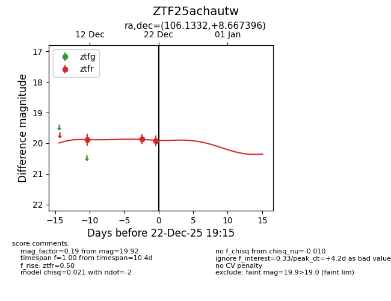
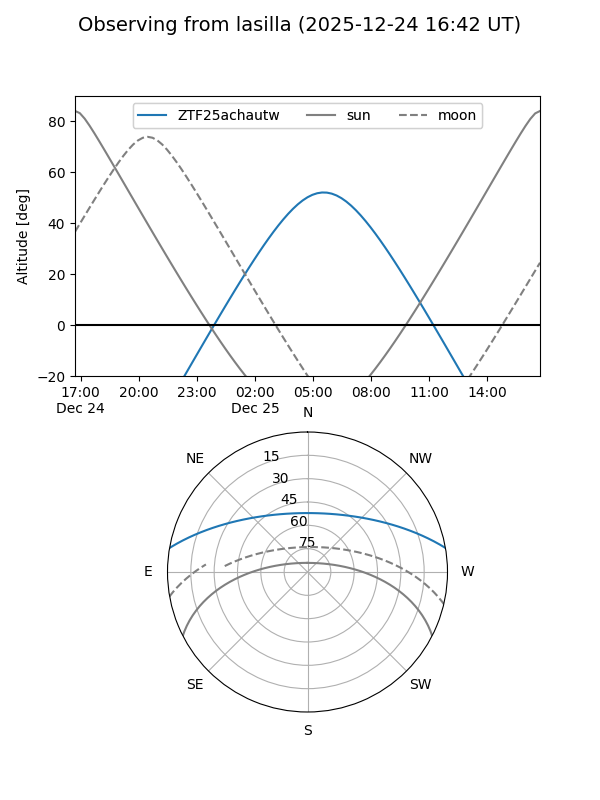
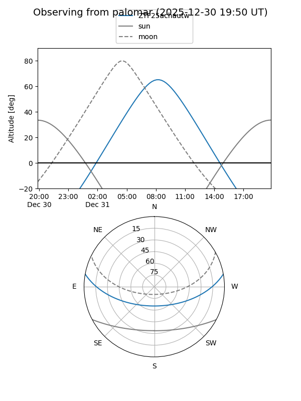
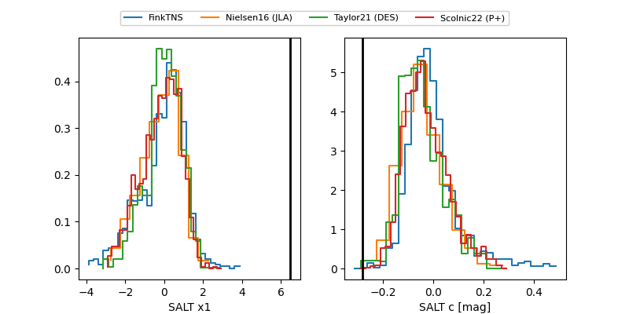

ZTF25achautw
Target ZTF25achautw at 2025-12-22 19:16
Aliases and brokers:
FINK: fink-portal.org/ZTF25achautw
Lasair: lasair-ztf.lsst.ac.uk/objects/ZTF25achautw
ALeRCE: alerce.online/object/ZTF25achautw
alt names
ZTF25achautw (ztf,fink_ztf)
Coordinates:
equatorial (ra, dec) = 106.1332,+8.66740
equatorial (HMS+DMS) = 07:04:31.96,+08:40:02.63
galactic (l, b) = (206.6654,+6.83203)
Flags:
Photometry:
last ztfr=19.92
3 ztfr detections
Lightcurve

Visibility


Additional plots
